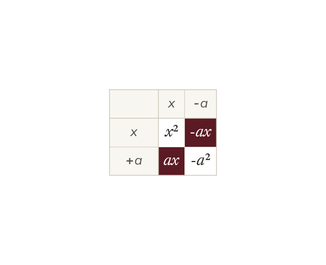
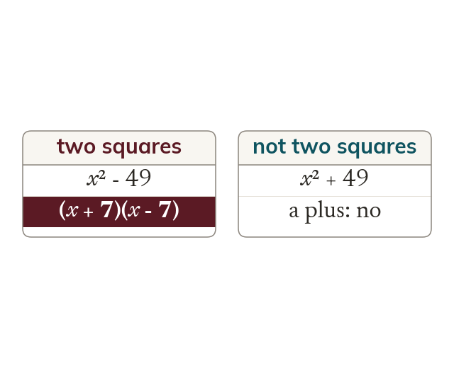
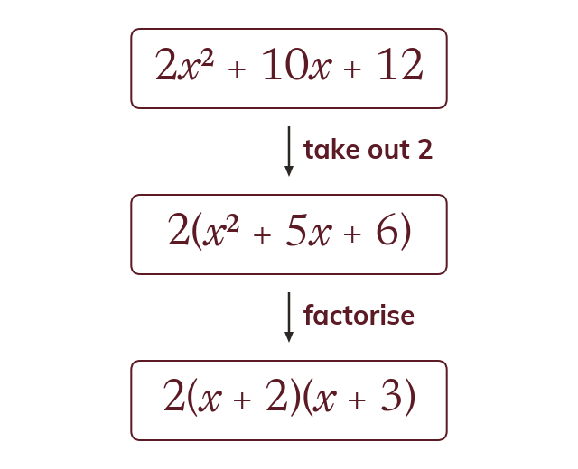
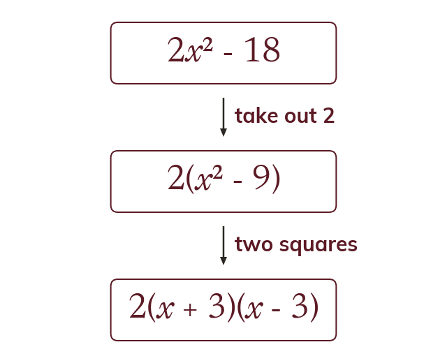

Why the middle terms vanish
Expanding (x + a)(x - a) gives x² - ax + ax - a². The two middle terms cancel, leaving x² - a².
x² - 9 has no x term, so last lesson's search for a pair seems to have nothing to work with. It still factorises, because it is one square minus another.
Work down the page at your own pace. Write every answer in your book first, then click to check it.
Read each card, then follow the worked examples one step at a time.

Expanding (x + a)(x - a) gives x² - ax + ax - a². The two middle terms cancel, leaving x² - a².

A difference of two squares is two square terms with a minus between them. It has no x term.
Pick an answer. If it's wrong, the feedback tells you which mistake it was.
Read each card, then follow the worked examples one step at a time.

Always take out a common factor before anything else. What is left may then factorise again.

2x² - 18 has no square terms until the 2 comes out. Then 2(x² - 9) becomes 2(x + 3)(x - 3).
Pick an answer. If it's wrong, the feedback tells you which mistake it was.
Finished? Next lesson: 9.8.4 Solving by Factorising.
Log in, then search for a code to practise that skill.
Videos, worksheets and more on each part of this lesson.